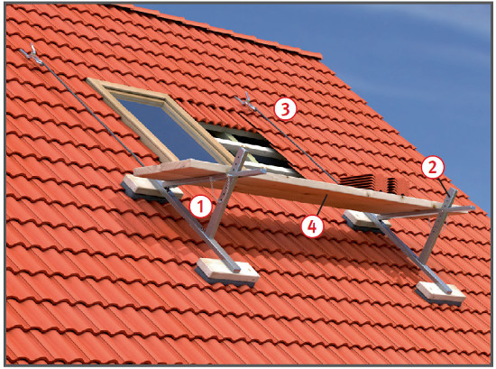
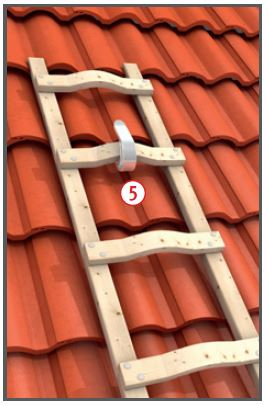
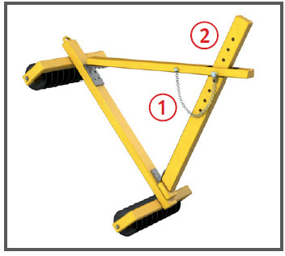
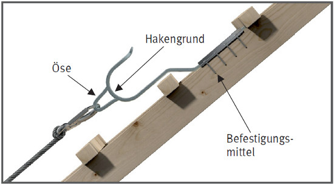
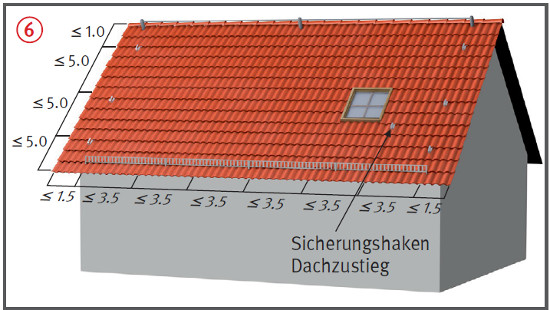
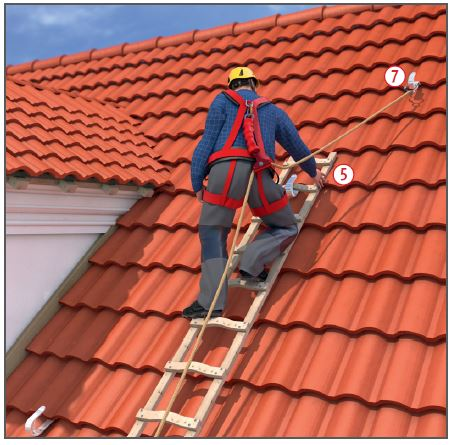

Dachdeckerstühle
Auflegeleitern
Sicherheitsdachhaken
|
|
Gefährdungen
- Beim Auf- und Abbau, bei der
Benutzung sowie durch nicht
fachgerechte Montage kann es
zu Absturzunfällen kommen.
Allgemeines
- Für Arbeiten auf einer mehr
als 45° geneigten Fläche sind
besondere Arbeitsplätze zu
schaffen, und zwar unabhängig
von den erforderlichen Absturzsicherungen.
Diese Absturzsicherungen können z.B. Dachschutzwände,
Dachfangwände
oder PSA gegen Absturz sein.
Mehr als 45° geneigte Flächen
können z.B. betonierte, geschalte
oder eingedeckte Dachflächen
sein.
- Betriebsanweisungen erstellen
und die Beschäftigten unterweisen.

Schutzmaßnahmen
Dachdeckerstühle
- Dachdeckerstühle nur nach Angaben der Hersteller aufbauen und verwenden.
- Dachdeckerstühle mit höchstens 1,5 kN belasten.
- Absteckdorne der Verstelleinrichtungen zur Anpassung an verschiedene Dachneigungen gegen unbeabsichtigtes Lösen sichern
 .
.
- Belagträger mit einer mindestens 60 mm hohen Aufkantung verwenden, die ein Abrutschen der Belagbohle verhindert
 .
.
- Aufhängung mit ausreichend bemessenen Tragmitteln, z. B. Seilen oder Ketten, an tragfähigen Anschlagpunkten vornehmen.
- Keinen Seitenschutz an Dachdeckerstühlen anbringen (Kippgefahr).
- Auf den Höchstabstand der Stühle (2,50 m) achten.
- Nur Belagbohlen mit einem Mindestquerschnitt von 45/240 mm verwenden
 .
.


Dachdecker-Auflegeleitern
- Auflegeleitern mit höchstens 1,5 kN belasten. Sie sind mit der Sprosse mittig in Dachhaken einzuhängen
 .
.
- Sicherheitsdachhaken nach
DIN EN 517 verwenden
 .
.
- Auflegeleitern nicht
- mit der obersten Sprosse einhängen,
- in die Dachrinne stellen,
- bei Dachneigungen von mehr als 75° benutzen,
- mit deckendem Anstrich versehen.



Sicherheitsdachhaken
- Auf Dächern mit einer Neigung > 22,5° und < 75° sind Sicherheitsdachhaken geeignet
- zum Einhängen von Dachdecker-Auflegeleitern ,
- zum Befestigen von Dachdeckerstühlen auf geneigten Dächern ,
- als Anschlageinrichtungen für PSA gegen Absturz bei kurzfristigen Dacharbeiten
 .
.
- Sicherheitsdachhaken sollten der DIN EN 517 Typ B entsprechen.
- Die Montage darf nur nach der Einbauanleitung des Herstellers erfolgen.
- Sicherheitsdachhaken für
Wartung und Instandhaltung auf
der Dachfläche verteilt einbauen
 .
.
- Übergabe einer Montagedokumentation
an den Auftraggeber
als Nachweis einer sachgerechten
Montage und als Grundlage
einer späteren Überprüfung der
Anschlageinrichtung.
Prüfungen
- Dachdeckerstühle und deren
Tragmittel vor jedem Einsatz auf ihren einwandfreien Zustand kontrollieren.
- Auflegeleitern vor jeder Benutzung auf augenscheinliche Mängel kontrollieren.
- Sicherheitsdachhaken müssen vor der Benutzung von einer
sachkundigen Person augenscheinlich auf ihre Tragfähigkeit überprüft werden.
07/2021